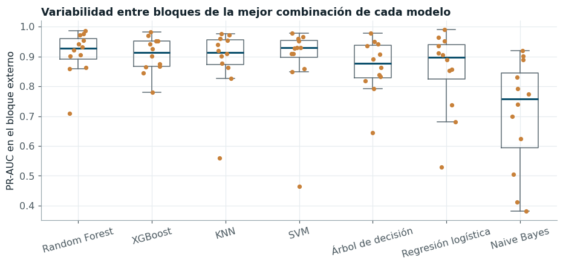
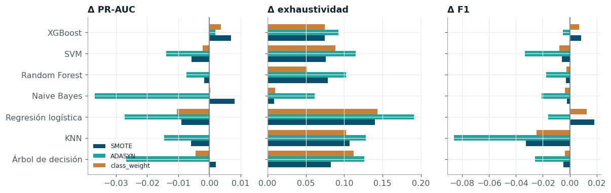
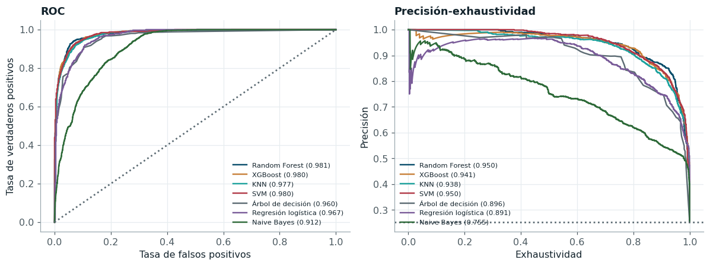
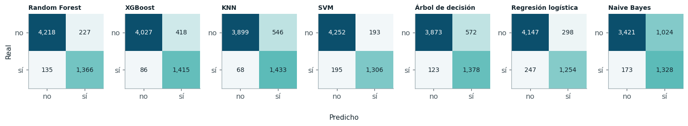
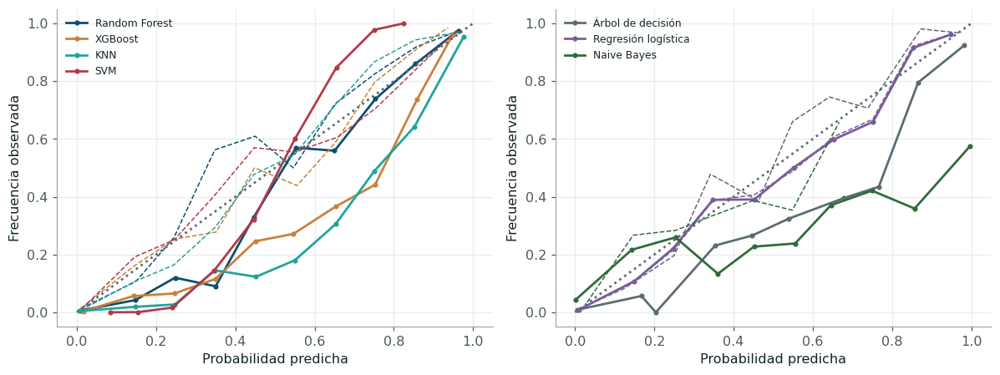

Resultados de clasificación#
Tabla maestra#
Las 112 combinaciones se evaluaron en los doce bloques externos
(1344 optimizaciones). La tabla muestra las veinte mejores según la PR-AUC
media del bucle externo; la tabla completa, con los hiperparámetros de cada pliegue, el tiempo
y la semilla, está en results/tabla_maestra.csv (capítulo 9).
| Modelo | Balanceo | Optimizador | PR-AUC | ROC-AUC | F1 | Recall | Brier | Tiempo total (s) | |
|---|---|---|---|---|---|---|---|---|---|
| 0 | Random Forest | class_weight | Random | 0.910 ± 0.075 | 0.974 ± 0.014 | 0.817 ± 0.127 | 0.917 ± 0.042 | 0.057 ± 0.021 | 1851.0 |
| 1 | Random Forest | SMOTE | Grid | 0.908 ± 0.095 | 0.974 ± 0.018 | 0.830 ± 0.123 | 0.918 ± 0.050 | 0.056 ± 0.020 | 3741.0 |
| 2 | Random Forest | Sin balanceo | Grid | 0.907 ± 0.106 | 0.973 ± 0.022 | 0.825 ± 0.118 | 0.849 ± 0.096 | 0.052 ± 0.017 | 2018.0 |
| 3 | Random Forest | Sin balanceo | Bayesiana (TPE) | 0.907 ± 0.100 | 0.973 ± 0.020 | 0.827 ± 0.106 | 0.849 ± 0.082 | 0.052 ± 0.017 | 1462.0 |
| 4 | Random Forest | Sin balanceo | Genética (DEAP) | 0.907 ± 0.097 | 0.973 ± 0.019 | 0.825 ± 0.109 | 0.844 ± 0.087 | 0.052 ± 0.017 | 2427.0 |
| 5 | Random Forest | class_weight | Grid | 0.906 ± 0.099 | 0.974 ± 0.018 | 0.832 ± 0.094 | 0.852 ± 0.068 | 0.052 ± 0.017 | 1926.0 |
| 6 | Random Forest | class_weight | Bayesiana (TPE) | 0.906 ± 0.088 | 0.973 ± 0.016 | 0.820 ± 0.114 | 0.919 ± 0.056 | 0.058 ± 0.018 | 2101.0 |
| 7 | Random Forest | SMOTE | Random | 0.906 ± 0.092 | 0.974 ± 0.017 | 0.821 ± 0.125 | 0.931 ± 0.048 | 0.059 ± 0.021 | 3537.0 |
| 8 | Random Forest | Sin balanceo | Random | 0.906 ± 0.096 | 0.973 ± 0.019 | 0.826 ± 0.109 | 0.846 ± 0.086 | 0.052 ± 0.017 | 1943.0 |
| 9 | Random Forest | SMOTE | Genética (DEAP) | 0.906 ± 0.092 | 0.973 ± 0.017 | 0.821 ± 0.126 | 0.924 ± 0.051 | 0.058 ± 0.021 | 4448.0 |
| 10 | XGBoost | ADASYN | Random | 0.905 ± 0.060 | 0.973 ± 0.013 | 0.805 ± 0.146 | 0.958 ± 0.027 | 0.068 ± 0.035 | 1725.0 |
| 11 | Random Forest | class_weight | Genética (DEAP) | 0.904 ± 0.091 | 0.973 ± 0.017 | 0.824 ± 0.118 | 0.906 ± 0.053 | 0.055 ± 0.019 | 2386.0 |
| 12 | Random Forest | ADASYN | Grid | 0.902 ± 0.091 | 0.972 ± 0.019 | 0.818 ± 0.124 | 0.939 ± 0.040 | 0.061 ± 0.022 | 3698.0 |
| 13 | XGBoost | SMOTE | Bayesiana (TPE) | 0.901 ± 0.098 | 0.973 ± 0.020 | 0.825 ± 0.129 | 0.927 ± 0.045 | 0.059 ± 0.023 | 1266.0 |
| 14 | XGBoost | SMOTE | Genética (DEAP) | 0.901 ± 0.111 | 0.972 ± 0.023 | 0.826 ± 0.130 | 0.928 ± 0.043 | 0.058 ± 0.026 | 2121.0 |
| 15 | Random Forest | SMOTE | Bayesiana (TPE) | 0.900 ± 0.091 | 0.973 ± 0.015 | 0.819 ± 0.119 | 0.929 ± 0.051 | 0.059 ± 0.020 | 3651.0 |
| 16 | Random Forest | ADASYN | Bayesiana (TPE) | 0.899 ± 0.074 | 0.973 ± 0.012 | 0.799 ± 0.133 | 0.954 ± 0.027 | 0.069 ± 0.027 | 3424.0 |
| 17 | Random Forest | ADASYN | Genética (DEAP) | 0.898 ± 0.082 | 0.972 ± 0.016 | 0.813 ± 0.117 | 0.951 ± 0.032 | 0.064 ± 0.022 | 4726.0 |
| 18 | Random Forest | ADASYN | Random | 0.898 ± 0.079 | 0.971 ± 0.017 | 0.803 ± 0.130 | 0.954 ± 0.035 | 0.066 ± 0.023 | 3579.0 |
| 19 | XGBoost | SMOTE | Random | 0.898 ± 0.111 | 0.972 ± 0.023 | 0.820 ± 0.137 | 0.926 ± 0.044 | 0.060 ± 0.028 | 1533.0 |

Figura 7 PR-AUC externa por bloque de cada modelo (mejor combinación de balanceo y optimizador). Cada punto es un bloque de dos años; la caja resume los doce bloques.#
La mejor combinación es Random Forest con ponderación por clase y búsqueda aleatoria, con una PR-AUC externa de 0,910 ± 0,075, y las diez primeras posiciones de la tabla maestra son variantes de Random Forest separadas por menos de una centésima. XGBoost aparece como el segundo algoritmo, con la combinación ADASYN y búsqueda aleatoria, y su desviación entre bloques es la menor de las mejores combinaciones. En el otro extremo, Naive Bayes (0,705) paga el supuesto de independencia condicional entre predictores que son, en buena parte, rezagos casi idénticos de la misma serie.
| PR-AUC media (112 combinaciones) | prevalencia | positivos que entran a la banda | caudal máximo en t+15 (m³/s) | |
|---|---|---|---|---|
| bloque | ||||
| 1986-1987 | 0.835 | 0.262 | 0.314 | 11649.0 |
| 1988-1989 | 0.784 | 0.201 | 0.408 | 13844.0 |
| 1990-1991 | 0.835 | 0.152 | 0.270 | 10586.0 |
| 1992-1993 | 0.864 | 0.130 | 0.316 | 10304.0 |
| 1994-1995 | 0.929 | 0.344 | 0.187 | 10236.0 |
| 1996-1997 | 0.966 | 0.259 | 0.159 | 11784.0 |
| 1998-1999 | 0.939 | 0.479 | 0.131 | 13663.0 |
| 2000-2001 | 0.901 | 0.301 | 0.273 | 11233.0 |
| 2002-2003 | 0.931 | 0.117 | 0.176 | 11322.0 |
| 2004-2005 | 0.769 | 0.193 | 0.475 | 13549.0 |
| 2006-2007 | 0.876 | 0.412 | 0.292 | 14494.0 |
| 2008-2009 | 0.523 | 0.098 | 0.417 | 14909.0 |
La Figura 7 muestra que la variabilidad entre bloques supera con amplitud la diferencia entre los mejores modelos, y la tabla anterior permite identificar su causa. La dificultad de un bloque depende menos de cuántos días están en la banda que de cuántos de ellos exigen anticipar una entrada: días en que el caudal todavía está fuera de la banda en t y la alcanza en t + 15. La correlación de Spearman entre la PR-AUC media del bloque y la proporción de positivos de ese tipo es de -0,93 (p = 1,2 × 10⁻⁵, doce bloques), mientras que la correlación con la prevalencia (0,47, p = 0,12) no es significativa. El bloque 2008-2009, el más difícil para todos los modelos (PR-AUC media de 0,52 entre las 112 combinaciones), reúne dos condiciones desfavorables: una prevalencia de apenas 9,8 %, que reduce la PR-AUC alcanzable, y un 42 % de positivos que son entradas a la banda, frente a una mediana de 28 % en los doce bloques. Hidrológicamente, el bloque contiene la crecida de 2008, cuyo caudal máximo (14.909 m³/s) es el tercero más alto del periodo de entrenamiento, y el río atraviesa la banda en ascensos y descensos rápidos que el estado actual anticipa mal. La variabilidad entre bloques tiene, por tanto, un origen físico identificable y no es ruido de estimación; por esa razón las conclusiones de este capítulo se apoyan en pruebas sobre bloques pareados y no en comparaciones de medias.
Efecto del balanceo de clases#

Figura 8 Cambio medio de cada métrica respecto de no balancear, por modelo y técnica (promedio sobre optimizadores y bloques). Valores positivos indican mejora.#
| balanceo | métrica | Δ media | fracción de mejoras | p (Wilcoxon) | p (Holm) | |
|---|---|---|---|---|---|---|
| 0 | SMOTE | pr_auc | -0.0008 | 0.5179 | 0.5315 | 1.0000 |
| 1 | SMOTE | recall | 0.0811 | 0.9286 | 0.0000 | 0.0000 |
| 2 | SMOTE | f1 | -0.0031 | 0.4881 | 0.7202 | 1.0000 |
| 3 | ADASYN | pr_auc | -0.0178 | 0.2976 | 0.0000 | 0.0000 |
| 4 | ADASYN | recall | 0.1167 | 0.9702 | 0.0000 | 0.0000 |
| 5 | ADASYN | f1 | -0.0293 | 0.3512 | 0.0000 | 0.0000 |
| 6 | class_weight | pr_auc | -0.0019 | 0.3601 | 0.0084 | 0.0337 |
| 7 | class_weight | recall | 0.0833 | 0.9256 | 0.0000 | 0.0000 |
| 8 | class_weight | f1 | -0.0033 | 0.4613 | 0.2328 | 0.6983 |
El balanceo no mejora la discriminación. La PR-AUC, que evalúa el orden de los puntajes y no depende del umbral, apenas cambia con SMOTE (-0,0008, no significativo) o con la ponderación por clase (-0,0019), y empeora con ADASYN (-0,0178, significativo tras Holm). Lo que sí cambia es el punto de operación con el umbral de 0,5: la exhaustividad sube entre 0,08 y 0,12 puntos a costa de la precisión, y el F1 queda igual o baja. Este comportamiento es el esperado para un desbalance moderado (26 % de positivos): las tres técnicas desplazan el umbral efectivo hacia la clase minoritaria, lo que equivale a cambiar el costo relativo de los errores, pero no aportan información nueva sobre qué días están en la banda.
File "C:\Users\User\miniconda3\envs\ml-final\Lib\site-packages\joblib\externals\loky\backend\context.py", line 257, in _count_physical_cores
cpu_info = subprocess.run(
^^^^^^^^^^^^^^^
File "C:\Users\User\miniconda3\envs\ml-final\Lib\subprocess.py", line 548, in run
with Popen(*popenargs, **kwargs) as process:
^^^^^^^^^^^^^^^^^^^^^^^^^^^
File "C:\Users\User\miniconda3\envs\ml-final\Lib\subprocess.py", line 1026, in __init__
self._execute_child(args, executable, preexec_fn, close_fds,
File "C:\Users\User\miniconda3\envs\ml-final\Lib\subprocess.py", line 1538, in _execute_child
hp, ht, pid, tid = _winapi.CreateProcess(executable, args,
^^^^^^^^^^^^^^^^^^^^^^^^^^^^^^^^^^^^^^^
| indicador | valor | |
|---|---|---|
| 0 | Mediana de la separación temporal con los 5 ve... | 3.000 |
| 1 | Vecinos positivos a 7 días o menos | 0.836 |
| 2 | Positivos con al menos un vecino negativo | 0.182 |
| 3 | Positivos a menos del 5 % de Q_ef de un límite | 0.309 |
| 4 | Peso de ADASYN asignado a esos positivos | 0.805 |
El efecto negativo de ADASYN se explica por la interacción entre su regla de muestreo y la estructura temporal de los datos. ADASYN genera más sintéticos alrededor de los positivos que tienen negativos entre sus vecinos, y solo el 18 % de los positivos cumple esa condición; como esos días se ubican cerca de los límites de la banda, el 81 % del peso de muestreo recae en positivos situados a menos del 5 % de \(Q_{ef}\) de un límite, aunque estos representan solo el 31 % de la clase. Además, los vecinos positivos con que interpola son, en la práctica, días contiguos del mismo episodio: la separación temporal mediana es de 3 días y el 84 % de los vecinos está a una semana o menos. El método produce, por tanto, casi duplicados de los casos más ambiguos de cada episodio y desplaza la frontera hacia la región donde la etiqueta es menos fiable. SMOTE, que reparte los sintéticos de manera uniforme entre los positivos, no presenta esa concentración, y su efecto sobre la PR-AUC no es significativo.
Desempeño en la prueba reservada#
Con la combinación ganadora de cada modelo se repitió la optimización sobre todo el entrenamiento (1947-2009), se reentrenó el pipeline y se evaluó una única vez en 2010-2026.
| Modelo | Balanceo | Optimizador | Accuracy | Precision | Recall | F1 | ROC-AUC | PR-AUC | Brier | Inferencia (ms/fila) | |
|---|---|---|---|---|---|---|---|---|---|---|---|
| 0 | Random Forest | class_weight | Random | 0.9391 | 0.8575 | 0.9101 | 0.8830 | 0.9806 | 0.9495 | 0.0486 | 0.0056 |
| 1 | XGBoost | ADASYN | Random | 0.9152 | 0.7720 | 0.9427 | 0.8488 | 0.9797 | 0.9411 | 0.0584 | 0.0039 |
| 2 | KNN | class_weight | Genética (DEAP) | 0.8967 | 0.7241 | 0.9547 | 0.8236 | 0.9769 | 0.9377 | 0.0695 | 0.4250 |
| 3 | SVM | Sin balanceo | Random | 0.9347 | 0.8712 | 0.8701 | 0.8707 | 0.9801 | 0.9496 | 0.0806 | 0.0273 |
| 4 | Árbol de decisión | SMOTE | Grid | 0.8831 | 0.7067 | 0.9181 | 0.7986 | 0.9604 | 0.8959 | 0.0762 | 0.0011 |
| 5 | Regresión logística | Sin balanceo | Random | 0.9083 | 0.8080 | 0.8354 | 0.8215 | 0.9665 | 0.8910 | 0.0642 | 0.0012 |
| 6 | Naive Bayes | SMOTE | Genética (DEAP) | 0.7987 | 0.5646 | 0.8847 | 0.6893 | 0.9118 | 0.7553 | 0.1938 | 0.0024 |

Figura 9 Curvas ROC y de precisión-exhaustividad en la prueba 2010-2026 de la mejor combinación de cada modelo.#

Figura 10 Matrices de confusión en la prueba (umbral 0,5) de la mejor combinación de cada modelo.#
En la prueba reservada, Random Forest y SVM empatan en PR-AUC (0,950), seguidos de XGBoost y KNN; Random Forest obtiene además el mejor F1 y el menor Brier. Los valores de la prueba superan a las medias externas porque el periodo 2010-2026 no contiene un tramo tan desfavorable como el bloque 2008-2009, lo que refuerza la conveniencia de evaluar sobre muchos bloques y no sobre una única partición. Todos los modelos superan con amplitud a la persistencia (PR-AUC de 0,65 en el capítulo 2), que es la referencia exigente en una serie con autocorrelación de 0,92 a quince días. Los tiempos de inferencia son del orden de milésimas de milisegundo por día, salvo KNN, que debe calcular distancias a todo el entrenamiento.
Justificación de la métrica principal#
El criterio de selección es la PR-AUC porque el interés operativo está en la clase positiva y porque la clase es minoritaria: la PR-AUC de un clasificador aleatorio es igual a la prevalencia (0,25), mientras que la ROC-AUC de ese mismo clasificador es 0,5 y se mantiene alta aunque el modelo produzca muchas falsas alarmas, porque los verdaderos negativos son abundantes [Saito and Rehmsmeier, 2015]. Entre precisión y exhaustividad, el costo relativo depende del uso. Para programar una campaña de muestreo de sedimentos o una purga de embalse, un falso negativo (no anticipar un periodo de transporte dominante) significa perder la ventana de operación, mientras que un falso positivo cuesta una movilización innecesaria; en ese escenario conviene privilegiar la exhaustividad, y el umbral puede bajarse a partir de la curva de la Figura 9. Para la planificación de dragados, en cambio, las falsas alarmas tienen un costo directo y conviene la precisión. Al reportar la PR-AUC, que integra todos los umbrales, la comparación entre modelos no depende de esa elección, que se deja al usuario del dashboard.
Calibración de probabilidades#

Figura 11 Diagramas de confiabilidad en la prueba, antes (línea continua) y después (línea discontinua) de la recalibración de Platt ajustada con las predicciones fuera de muestra del bucle externo.#
| Modelo | Brier | ECE | Brier Platt | ECE Platt | Brier isotónica | ECE isotónica | Recalibrar (decisión en OOF) | |
|---|---|---|---|---|---|---|---|---|
| 0 | Random Forest | 0.0486 | 0.0305 | 0.0462 | 0.0188 | 0.0462 | 0.0166 | sí |
| 1 | XGBoost | 0.0584 | 0.0575 | 0.0479 | 0.0196 | 0.0476 | 0.0117 | sí |
| 2 | KNN | 0.0695 | 0.0756 | 0.0515 | 0.0183 | 0.0514 | 0.0142 | sí |
| 3 | SVM | 0.0806 | 0.1747 | 0.0473 | 0.0101 | 0.0481 | 0.0163 | sí |
| 4 | Árbol de decisión | 0.0762 | 0.0636 | 0.0650 | 0.0282 | 0.0671 | 0.0150 | sí |
| 5 | Regresión logística | 0.0642 | 0.0189 | 0.0642 | 0.0193 | 0.0649 | 0.0244 | no |
| 6 | Naive Bayes | 0.1938 | 0.1927 | 0.1154 | 0.0167 | 0.1130 | 0.0207 | sí |
La calibración separa a los modelos con más claridad que la discriminación. La SVM produce puntajes sin calibrar, porque su función de decisión se transforma con una logística fija, y su error de calibración esperado es alto; lo mismo ocurre con Naive Bayes (ECE = 0,193), cuyas probabilidades se concentran en los extremos por el supuesto de independencia. La recalibración de Platt, ajustada con las predicciones fuera de muestra del bucle externo y nunca con la prueba, reduce el ECE de Naive Bayes a 0,017 y el de la SVM por debajo de 0,011, y mejora el Brier de todos los modelos salvo la regresión logística, que ya estaba bien calibrada por construcción: su pérdida logarítmica es una regla propia y la decisión tomada en las predicciones fuera de muestra fue, correctamente, no recalibrarla. La regresión isotónica logra reducciones similares; se prefirió Platt por tener solo dos parámetros, menos propensos a sobreajustar con la dependencia temporal de las predicciones. El dashboard usa la versión recalibrada cuando la decisión en las predicciones fuera de muestra fue favorable.
Robustez y estabilidad#
| desviación entre semillas (media por bloque) | desviación entre bloques (media por semilla) | |
|---|---|---|
| Random Forest (mejor benchmark) | 0.0058 | 0.0785 |
| BLGB (modelo original) | 0.0029 | 0.0599 |
Todas las métricas de este capítulo se reportan como media ± desviación estándar sobre los doce bloques externos y no como valores puntuales. Para el mejor benchmark, la sensibilidad a la semilla de inicialización (cinco semillas, con los hiperparámetros elegidos en cada bloque) es pequeña: la desviación media entre semillas dentro de un bloque es de 0,0058, frente a una desviación entre bloques de 0,0785. La aleatoriedad del algoritmo pesa, por tanto, mucho menos que la variabilidad hidrológica entre periodos. Al mismo tiempo, las diez mejores combinaciones de la tabla maestra se separan en apenas 0,0042 de PR-AUC media, una diferencia del mismo orden que la variabilidad entre semillas y muy inferior a la variabilidad entre bloques. Las diferencias entre los mejores benchmarks no son, por tanto, mayores que la variabilidad intrínseca de cada uno, y decidir entre ellos exige las pruebas formales de la sección de comparación estadística.